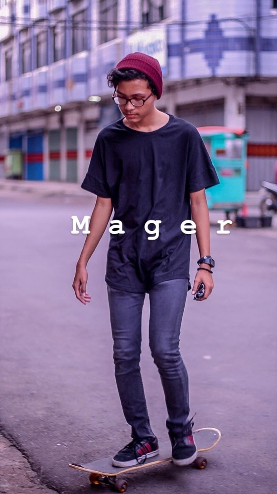

Hello World !

ALDO
About
Saya Rizaldo Abdulrachman yang biasa dipanggil ALDO. tidak begitu suka dengan pemrogaman web
saya akan tetap berusaha untuk menyukainya. Cita - cita saya untuk saat ini Adalah
dapat lulus matakuliah PABW dan dapat memahami cara membuat web.